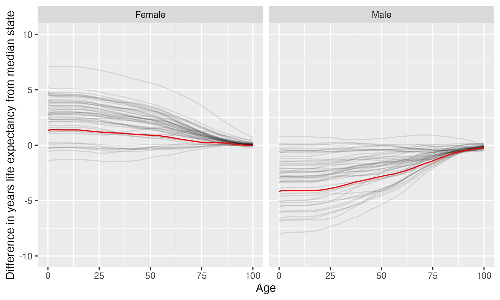

Cedarville University
Cedarville University is located in Cedarville, Ohio. It is a private not-for-profit, 4-year or above institution.
From Wikipedia: Cedarville University is a private Baptist university in Cedarville, Ohio. It is chartered by the state of Ohio, approved by the Ohio Board of Regents, and accredited by the Higher Learning Commission. Established in 1887, the school was originally affiliated with the conservative Reformed Presbyterian Church in North America, General Synod, now known as the Presbyterian Church in America. Since 2003, Cedarville is affiliated with the State Convention of Baptists in Ohio (Southern Baptist Convention).
.
Notes
These are items that bear looking into more closely: some may be problems, some may be neutral, some may be good. These are just things that are worth noticing.
California considers the state this institution is in to have one or more anti-LGBTQ+ laws. It prohibits California-sponsored travel to this state as a safety measure. See more here.
Unsatisfactory conditions of academic freedom and tenure have been found to prevail at this institution according to the AAUP
Overview of institution
Institution kind: Master’s Colleges & Universities: Medium Programs
Undergrad program: Professions plus arts & sciences, some graduate coexistence
Graduate program: Postbaccalaureate: Other-dominant, with other professional programs
Enrollment profile: Very high undergraduate (see more details below)
Average net price for undergrads on financial aid: $25,380 (1.8 times the equivalent cost of Harvard).
Average net price for families with $30K-48K income: $18,961 (This is $17,565 more expensive than what Harvard costs for equivalent students).
Actual price for your family: Go here to see what your family may be asked to pay. It can be MUCH lower than the average price but also higher for some.
Size and setting: Four-year, medium, highly residential
In state percentage: 35.0% of first year students come from Ohio
In US percentage: 97.5% of first year students come from the US (note that 0.0% have no residence reported)
Graduation rate (within 6 years) for students seeking a Bachelors: 73.3% (this is what is usually reported as “graduation rate”)
Graduation rate (within 4 years) for students seeking a Bachelors: 64.3%
Student to tenure-stream faculty ratio: 24.6 (undergrads to tenure-stream faculty)
Student to faculty ratio: 15.6 (undergrads to all faculty)
Degrees offered: Certificate of at least 1 year but less than 2 years, Bachelor’s degree, Postbaccalaureate certificate, Master’s degree, Post master’s certificate, Doctor’s degree: professional practice
Schedule: Semester
Institution provides on campus housing: Yes
Dorm capacity: There are enough dorm beds for 2940 students
Freshmen required to live on campus: No
Meal plan: Yes, number of meals per week can vary
Covid vaccination requirement for students: This institution was never reported as requiring covid vaccination for students (based on info from here)
Covid vaccination requirement for faculty/staff: This institution was never reported as requiring covid vaccination for faculty and/or staff (based on info from here)
Advanced placement (AP) credits used: Yes
Disabilities: 3 percent or less of undergrads are registered as having disabilities.
Overview of location
- Abortion in this state: Restrictive (based on https://states.guttmacher.org/policies/ as of May 10, 2023)
- Gun law stringency: D (higher grade = more stringent)
- State rep support for contraception: 31.2% of US reps from this state voted in favor of legal protections for contraception.
- State rep support for recognizing same-sex and interracial marriage: 50% of US reps from this state voted in favor of requiring states to recognize same-sex and interracial marriages performed in other states
- Anti-trans legislative risk: High risk (based on Erin Reed’s work, as of April 2, 2023)
- Ecological region: Southern Great Lakes forests
- Biome: Temperate Broadleaf & Mixed Forests
- Distance to mountains: 160.1 miles to Appalachian Mountains
- Climate: See overview at WeatherSpark
Similar institutions
This is using information about school size, acceptance rate, yield rate, graduation rate, cost, athletic conference, and similar metrics, but it can miss important axes of similarity (for example, culinary versus hair styling schools).
Map
Enrollment
| Cedarville University | Change over ≤ 11 years | Trend | Great Midwest Athletic Conference | Master’s Colleges & Universities: Medium Programs | |
|---|---|---|---|---|---|
| Undergrads (full time) | 3,597 (2021) |

|
↑ 55 per year |
||
| Undergrads (part time) | 594 (2021) |

|
↑ 38 per year |
||
| Grad students (full time) | 242 (2021) |

|
↑ 28 per year |
||
| Grad students (part time) | 210 (2021) |

|
|||
| Admission rate (undergrads) | 62% (2021) |

|
|||
| Yield rate (percent of applicants offered undergraduate admission who accept) | 30% (2021) |

|
✪✪✪✪✪ Better (higher) than 85% |
✪✪✪✪ Better (higher) than 72% |
|
| Graduation rate (bachelors in 6 years) | 73% (2021) |

|
✪✪✪✪✪ Better (higher) than 93% |
✪✪✪✪✪ Better (higher) than 96% |
Student financing
At many universities, almost no students pay the listed tuition and fees (“sticker price”): instead, their financial aid package lowers this dramatically, but how much students pay can vary substantially based on family income and other factors. The tuition below is the average across many students receiving aid: your family may be asked to pay less or more than this.
| Cedarville University | Change over ≤ 11 years | Trend | Great Midwest Athletic Conference | Master’s Colleges & Universities: Medium Programs | |
|---|---|---|---|---|---|
| Average net price (for students awarded aid) | $25,380 (2020) |

|
↑ $284 per year |
✪ Better (lower) than 7% |
✪✪ Better (lower) than 21% |
| Undergrads getting federal aid | 21% (2021) |

|
✪ Better (higher) than 7% |
✪ Better (higher) than 3% |
|
| Undergrads getting any aid | 100% (2021) |

|
✪✪✪✪✪ Better (higher) than 100% |
✪✪✪✪✪ Better (higher) than 100% |
|
| Undergrads getting Pell grants | 19% (2021) |

|
✪ Better (higher) than 7% |
✪ Better (higher) than 5% |
Teaching
| Cedarville University | Change over ≤ 11 years | Trend | Great Midwest Athletic Conference | Master’s Colleges & Universities: Medium Programs | |
|---|---|---|---|---|---|
| Undergrads per tenure track instructor (lower is better) | 25 (2020) |

|
↑ 0.7 per year |
✪✪ Better (lower) than 33% |
✪✪ Better (lower) than 22% |
| Undergrads per instructor (lower is better) | 16 (2020) |

|
↑ 0.4 per year |
✪ Better (lower) than 17% |
✪✪✪ Better (lower) than 50% |
| Total instructors | 227 (2020) |

|
|||
| Tenure track instructors | 144 (2020) |

|
↓ -1.8 per year |
||
| Non-tenure track instructors | 83 (2020) |

|
Student details
| Cedarville University | Change over ≤ 11 years | Trend | |
|---|---|---|---|
| Dorm capacity | 2,940 (2021) |

|
↑ 38 per year |
| Percent of undergrads with registered disabilities (≤3 is rounded up to 3) | 3% (2021) |

|
Institution finances
| Cedarville University | Change over ≤ 11 years | Trend | Great Midwest Athletic Conference | Master’s Colleges & Universities: Medium Programs | |
|---|---|---|---|---|---|
| Revenue from tution and fees | 54% (2021) |

|
✪✪ Better (lower) than 29% |
✪✪ Better (lower) than 25% |
|
| Revenue minus expenses | $39 M (2021) |

|
↑ $2.2 M per year |
✪✪✪✪✪ Better (higher) than 93% |
✪✪✪✪✪ Better (higher) than 94% |
| Revenue | $136 M (2021) |

|
↑ $4.0 M per year |
||
| Expenses | $97 M (2021) |

|
↑ $1.8 M per year |
||
| Assets | $258 M (2021) |

|
↑ $9.9 M per year |
✪✪✪✪✪ Better (higher) than 86% |
✪✪✪✪ Better (higher) than 78% |
Graduation rates
Graduation rates for bachelor’s degrees within 150% of normal time (6 years for a 4-year degree). Note that this uses US federal demographic data: it only has two genders and a specified set of ethnicities and races. For groups with small numbers, the graduation rate may be highly variable year to year (do all three people in this group graduate this year or just two of three, for example).
| Cedarville University | Change over ≤ 11 years | Great Midwest Athletic Conference | Master’s Colleges & Universities: Medium Programs | |
|---|---|---|---|---|
| Total | 73% (2021) |

|
✪✪✪✪✪ Better (higher) than 93% |
✪✪✪✪✪ Better (higher) than 96% |
| Men | 72% (2021) |

|
✪✪✪✪✪ Better (higher) than 93% |
✪✪✪✪✪ Better (higher) than 96% |
| Women | 75% (2021) |

|
✪✪✪✪✪ Better (higher) than 93% |
✪✪✪✪✪ Better (higher) than 90% |
| American Indian or Alaska Native men | 100% (2021) |

|
✪✪✪✪✪ Better (higher) than 100% |
✪✪✪✪✪ Better (higher) than 100% |
| American Indian or Alaska Native women | 100% (2021) |

|
✪✪✪✪✪ Better (higher) than 100% |
✪✪✪✪✪ Better (higher) than 100% |
| Asian men | 62% (2021) |

|
✪✪✪✪ Better (higher) than 75% |
✪✪✪✪ Better (higher) than 61% |
| Asian women | 100% (2021) |

|
✪✪✪✪✪ Better (higher) than 100% |
✪✪✪✪✪ Better (higher) than 100% |
| Black or African American men | 0% (2021) |

|
✪ Better (higher) than 0% |
✪ Better (higher) than 8% |
| Black or African American women | 75% (2021) |

|
✪✪✪✪✪ Better (higher) than 92% |
✪✪✪✪✪ Better (higher) than 92% |
| Hispanic men | 46% (2021) |

|
✪✪✪ Better (higher) than 54% |
✪✪✪ Better (higher) than 58% |
| Hispanic women | 55% (2021) |

|
✪✪✪✪✪ Better (higher) than 91% |
✪✪✪ Better (higher) than 56% |
| Native Hawaiian or other Pacific Islander men | 100% (2016) |

|
||
| White men | 74% (2021) |

|
✪✪✪✪✪ Better (higher) than 100% |
✪✪✪✪✪ Better (higher) than 95% |
| White women | 75% (2021) |

|
✪✪✪✪✪ Better (higher) than 92% |
✪✪✪✪✪ Better (higher) than 80% |
| Two or more races men | 65% (2021) |

|
✪✪✪✪ Better (higher) than 78% |
✪✪✪✪ Better (higher) than 78% |
| Two or more races women | 87% (2021) |

|
✪✪✪✪ Better (higher) than 73% |
✪✪✪✪✪ Better (higher) than 90% |
| Nonresident alien men | 71% (2021) |

|
✪✪✪✪ Better (higher) than 67% |
✪✪✪✪ Better (higher) than 76% |
| Nonresident alien women | 50% (2021) |

|
✪✪ Better (higher) than 33% |
✪✪✪ Better (higher) than 41% |
Freshmen demographics
Demographic data for first time degree-seeking students. Note that this uses US federal demographic data: it only has two genders and a specified set of ethnicities and races.
| Cedarville University | Change over ≤ 11 years | |
|---|---|---|
| Men (percent freshmen) | 44% (2021) |

|
| Women (percent freshmen) | 56% (2021) |

|
| American Indian or Alaska Native men (percent freshmen) | 0% (2021) |

|
| American Indian or Alaska Native women (percent freshmen) | 0% (2021) |

|
| Asian men (percent freshmen) | 0.9% (2021) |

|
| Asian women (percent freshmen) | 1.8% (2021) |

|
| Black or African American men (percent freshmen) | 0.7% (2021) |

|
| Black or African American women (percent freshmen) | 1.1% (2021) |

|
| Hispanic men (percent freshmen) | 0% (2021) |

|
| Hispanic women (percent freshmen) | 0% (2021) |

|
| Native Hawaiian or Other Pacific Islander men (percent freshmen) | 0% (2021) |

|
| Native Hawaiian or Other Pacific Islander women (percent freshmen) | 0% (2021) |

|
| White men (percent freshmen) | 40% (2021) |

|
| White women (percent freshmen) | 49% (2021) |

|
| Two or more races men (percent freshmen) | 1.2% (2021) |

|
| Two or more races women (percent freshmen) | 2.7% (2021) |

|
| Race ethnicity unknown men (percent freshmen) | 0.3% (2021) |

|
| Race ethnicity unknown women (percent freshmen) | 0.6% (2021) |

|
| Nonresident alien men (percent freshmen) | 0.5% (2021) |

|
| Nonresident alien women (percent freshmen) | 1.1% (2021) |

|
Freshmen geography
| Cedarville University | Change over ≤ 11 years | |
|---|---|---|
| In state | 35% (2021) |

|
| US | 98% (2021) |

|
| Not reported | 0% (2021) |

|
Tenure track faculty
Tenure track faculty are those who are eligible for tenure. This includes both pre-tenure and tenured faculty. Once faculty get tenure, they are (generally) protected from being fired for intellectual reasons, helping to ensure their freedom in teaching and research. They can still lose their positions for misconduct, financial problems, not fulfilling their duties, or other reasons. Note that this chart uses US federal demographic data: it only has two genders and a specified set of ethnicities and races.
| Cedarville University | Change over ≤ 11 years | Trend | |
|---|---|---|---|
| Total (tenure-track count) | 144 (2020) |

|
↓ -1.8 per year |
| Women (tenure-track count) | 35 (2020) |

|
↓ -1.2 per year |
| Men (tenure-track count) | 109 (2020) |

|
|
| American Indian or Alaska Native (tenure-track count) | 0 (2020) |

|
↓ -0.2 per year |
| Asian (tenure-track count) | 8 (2020) |

|
|
| Black or African American (tenure-track count) | 3 (2020) |

|
|
| Hispanic or Latino (tenure-track count) | 2 (2020) |

|
|
| Native Hawaiian or other Pacific Islander (tenure-track count) | 1 (2020) |

|
|
| White (tenure-track count) | 128 (2020) |

|
|
| Two or more races (tenure-track count) | 0 (2020) |

|
|
| Nonresident alien (tenure-track count) | 1 (2020) |

|
↑ 0.1 per year |
Non-tenure track faculty
Non-tenure track faculty are not eligible for tenure. Some are hired one semester at a time, some have multi-year contracts. They typically have a higher teaching load than tenure track faculty, leaving less time for research or other creative endeavors. They are also easier to fire than tenured faculty. Sometimes they are external experts (a noted musician, a former senator) who are hired to teach some classes without the expected permanence of a tenure-track position. Note that this chart uses US federal demographic data: it only has two genders and a specified set of ethnicities and races.
| Cedarville University | Change over ≤ 11 years | |
|---|---|---|
| Total (non-tenure-track count) | 83 (2020) |

|
| Women (non-tenure-track count) | 46 (2020) |

|
| Men (non-tenure-track count) | 37 (2020) |

|
| American Indian or Alaska Native (non-tenure-track count) | 0 (2020) |

|
| Asian (non-tenure-track count) | 3 (2020) |

|
| Black or African American (non-tenure-track count) | 3 (2020) |

|
| Hispanic or Latino (non-tenure-track count) | 1 (2020) |

|
| Native Hawaiian or other Pacific Islander (non-tenure-track count) | 0 (2020) |

|
| White (non-tenure-track count) | 72 (2020) |

|
| Two or more races (non-tenure-track count) | 0 (2020) |

|
| Nonresident alien (non-tenure-track count) | 0 (2020) |

|
Library facilities
| Cedarville University | Change over ≤ 11 years | Trend | Great Midwest Athletic Conference | Master’s Colleges & Universities: Medium Programs | |
|---|---|---|---|---|---|
| Number of physical books | 152,180 (2021) |

|
↓ -4,532 per year |
✪✪✪✪✪ Better (higher) than 86% |
✪✪✪✪ Better (higher) than 68% |
| Physical library circulations per students and faculty | 8.4 (2020) |

|
↓ -1.5 per year |
✪✪✪✪✪ Better (higher) than 100% |
✪✪✪✪✪ Better (higher) than 97% |
| Digital library circulations per students and faculty | 57 (2020) |

|
✪✪✪✪✪ Better (higher) than 100% |
✪✪✪✪✪ Better (higher) than 87% |
Life expectancy
This hopefully will not be relevant for potential students, but it may be for people moving to an area longer term, such as faculty and staff choosing where to live. This uses information from US National Vital Statistics Reports for 2020; like much federal data, it assumes people are male or female. For age difference from median, it is from the median state, averaging across all genders (one consequence of this is that the difference from the median life expectancy is almost always negative for men).
- Life expectancy at birth: 78.1 years women (1.3 years over the median), 72.5 years men (4.2 years below the median)
- Remaining life expectancy at age 18: 60.7 years women (1.3 years over the median), 55.3 years men (4.1 years below the median)
- Remaining life expectancy at age 30: 49.3 years women (1.1 years over the median), 44.5 years men (3.7 years below the median)
- Remaining life expectancy at age 45: 35.5 years women (1 years over the median), 31.5 years men (3 years below the median)
- Remaining life expectancy at age 60: 22.6 years women (0.7 years over the median), 19.6 years men (2.4 years below the median)
We can also plot the extra / fewer years of life expected for this state (red) compared to other states (dark gray) at each age. Again, this is normalized for the median state.

SAT scores
| Cedarville University | Change over ≤ 11 years | Trend | |
|---|---|---|---|
| Applicants submitting SAT | 33% (2021) |

|
|
| SAT Evidence Based Reading and Writing 25th percentile score | 580 (2021) |

|
|
| SAT Evidence Based Reading and Writing 75th percentile score | 680 (2021) |

|
|
| SAT Math 25th percentile score | 540 (2021) |

|
|
| SAT Math 75th percentile score | 670 (2021) |

|
↑ 4.2 per year |
ACT scores
| Cedarville University | Change over ≤ 11 years | Trend | |
|---|---|---|---|
| Applicants submitting ACT | 55% (2021) |

|
|
| ACT Composite 25th percentile score | 22 (2021) |

|
|
| ACT Composite 75th percentile score | 29 (2021) |

|
|
| ACT English 25th percentile score | 22 (2021) |

|
↓ -0.3 per year |
| ACT English 75th percentile score | 32 (2021) |

|
↑ 0.5 per year |
| ACT Math 25th percentile score | 21 (2021) |

|
↓ -0.3 per year |
| ACT Math 75th percentile score | 28 (2021) |

|